21 декабря в отрывном календаре:


Родился Томас Бекет (англ. Thomas Becket; также Фома Бекет или Фома Кентербери́йский) — одна из ключевых фигур в английской истории XII века, первоначально канцлер Генриха II, затем архиепископ Кентерберийский с 1162 по 1170 год. Вступил в конфликт с Генрихом II и был убит, возможно, по наущению короля на ступенях алтаря Кентерберийского собора. Канонизирован Католической церковью в 1173 году, с XIX века почитается и Церковью Англии.
Родился Мазаччо (итал. Masaccio; устар. вариант — Мазаччьо, собственно Томмазо ди Джованни ди Симоне Кассаи (Гвиди), Томмазо ди сер Джованни ди Гвиди) — итальянский живописец, крупнейший мастер флорентийской школы, реформатор живописи эпохи Кватроченто.
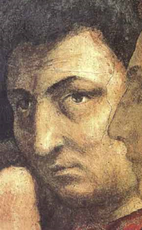Родился Салтыков Петр Семенович - — главнокомандующий русской армии в 1759—1760 годах, генерал-фельдмаршал (1759), с чьим именем связаны наиболее крупные успехи русской армии в Семилетней войне. В 1763—1771 годах московский главнокомандующий.
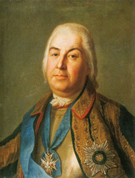Родился Роберт Броун (англ. Robert Brown) — британский ботаник, морфолог и систематик растений. Член Лондонского королевского общества (1811), иностранный член Парижской академии наук (1858; корреспондент с 1814), иностранный член-корреспондент (1826) и почётный член (1827) Петербургской академии наук. Обнаружил под микроскопом (1827) беспорядочное движение взвеси цветочной пыльцы в воде – т. н. броуновское движение.
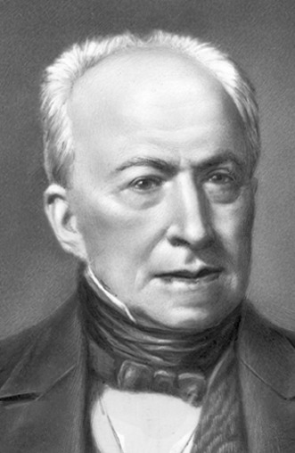Родился Томас Грэм (англ. Thomas Graham) — шотландский химик, который известен как один из основателей коллоидной химии, а также своими пионерскими работами в области диализа и диффузии газов. Проводил исследования в Эдинбургском университете (1827–28), профессор университета Глазго (с 1830) и Лондонского университетского колледжа (1837–55), директор Монетного двора (1855–69). Чл. Лондонского королевского общества (с 1836), один из основателей Лондонского химич. общества и первый его президент (1841–43, 1845–47), иностр. чл.-корр. Петербургской АН (1866).
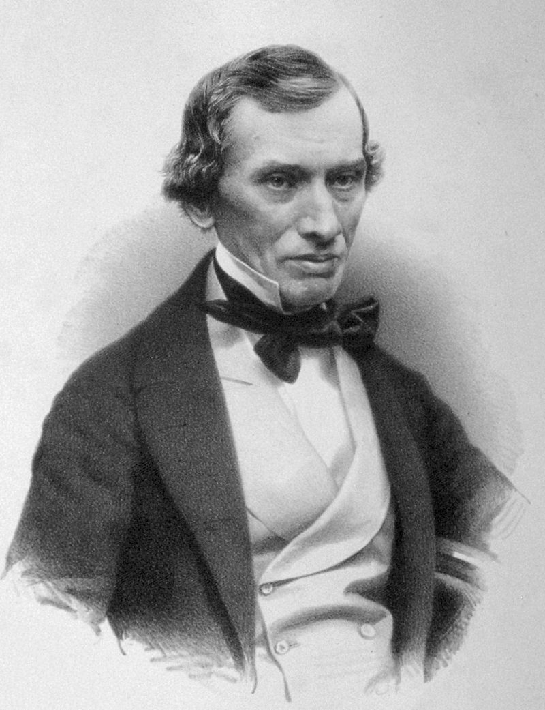Родился Перов Василий Григорьевич — русский живописец. Академик (1866) и профессор (1870) Императорской Академии художеств, один из членов-учредителей (1870) Товарищества передвижников.
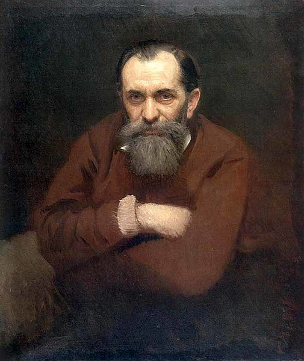При жизни Сталина и долгое время после его смерти считалось, что он родился 21 декабря 1879 года, однако позднее была найдена метрическая запись о рождении Иосифа Джугашвили, согласно которой он родился 18 декабря 1878 года и был крещён 29 декабря 1878 года.
Сталин Иосиф Виссарионович - российский революционный, советский партийный, государственный и военный деятель, генералиссимус Советского Союза (1945), Герой Социалистического Труда (1939), Герой Советского Союза (1945). Участник грузинского социал-демократического движения (с 1898), в 1903 г. примкнул к большевикам. Во время революции 1905–1907 гг. занимался подпольной работой в Закавказье, в том числе организовывал боевые отряды. В 1912 г. введён в Центральный комитет (ЦК) Российской социал-демократической рабочей партии. Несколько раз арестовывался и подвергался административной ссылке в Сибирь и северные районы. После Февральской революции 1917 г. прибыл из ссылки в Петроград; на Апрельской всероссийской конференции большевиков поддержал В. И. Ленина, избран членом ЦК Российской социал-демократической рабочей партии (большевиков). В ходе Октябрьской революции 1917 г. член Политбюро ЦК РСДРП(б) и Петроградского военно-революционного комитета. Народный комиссар по делам национальностей (1917–1923), государственного контроля (1919–1920), рабоче-крестьянской инспекции (1920–1922) РСФСР. В Гражданскую войну 1917–1922 гг. член Революционного военного совета Республики, реввоенсоветов Западного, Южного и Юго-Западного фронтов. В 1919 г. вошёл в состав Политбюро (с 1952 Президиум) ЦК партии. Генеральный секретарь (1922–1934) и секретарь (1934–1953) ЦК РКП(б)–ВКП(б)–КПСС. Председатель Совета народных комиссаров СССР (1941–1946) и Совета Министров СССР (1946–1953). В период Великой Отечественной войны 1941–1945 гг. председатель Государственного комитета обороны, Верховный главнокомандующий Вооружёнными Силами СССР.
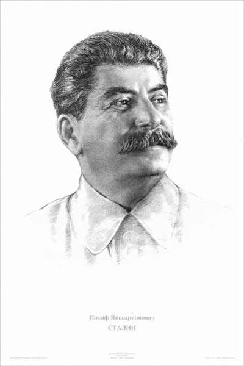Родился Мёллер Герман Джозеф (англ. Hermann Joseph "H. J." Muller) — американский генетик, ученик Томаса Ханта Моргана, лауреат Нобелевской премии по физиологии и медицине (1946). Наиболее известен своими работами в области мутагенного действия рентгеновских лучей и радикальными политическими взглядами. Член Национальной академии наук США (1931), иностранный член Лондонского королевского общества (1953), член-корреспондент Академии наук СССР (1933—1949, с 1990).
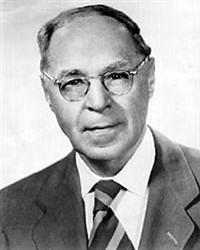Родился Рокоссовский Константин Константинович - советский военный деятель, полководец, Маршал Советского Союза (1944), дважды Герой Советского Союза (1944, 1945). Сражался во время Гражданской войны 1917–1922 гг. в рядах Красной гвардии и Красной Армии. В 1920–1930-е гг. командовал кавалерийскими частями и соединениями, с 1936 г. – кавалерийским корпусом. В 1937–1940 гг. находился под следствием, освобождён в связи с прекращением дела. В ходе Великой Отечественной войны 1941–1945 гг. командовал 16-й армией (с августа 1941), затем – рядом фронтов (с июля 1942). Внёс значительный вклад в проведение Московской битвы 1941–1942 гг., Сталинградской битвы 1942–1943 гг. и Курской битвы 1943 г., Белорусской операции 1944 г., Восточно-Прусской операции и Берлинской операции 1945 г. С 1945 г. главнокомандующий Северной группой войск. С 1949 г. министр Национальной обороны Польши. С 1956 г. занимал руководящие посты в Министерстве обороны СССР.
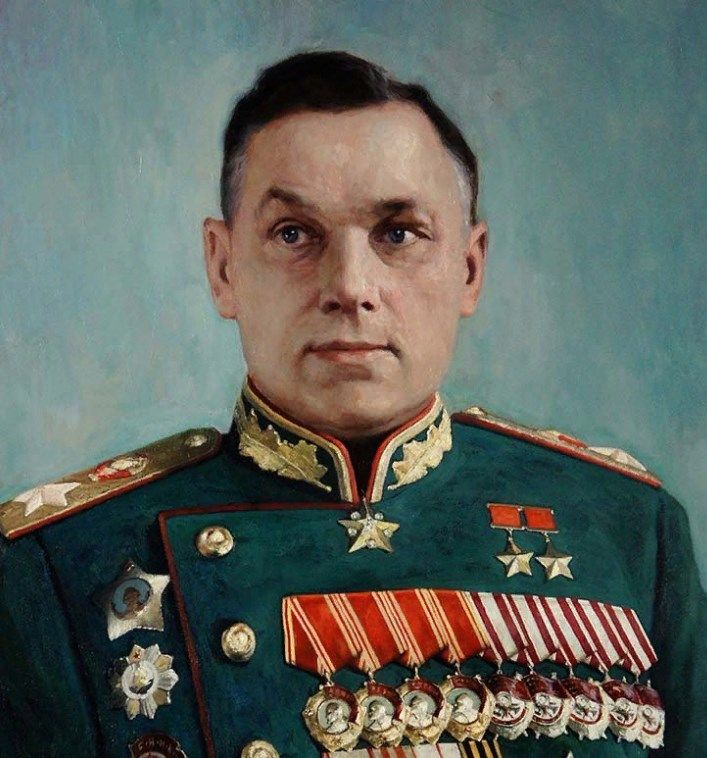Родился Северин Сергей Евгеньевич - российский биохимик, академик АН СССР (1968) и АМН СССР (1948), иностранный член Национальной АН Германии «Леопольдина» (1971), Герой Социалистического Труда (1971). Занимался исследованиями в области биохимии миокарда, изучал молекулярные механизмы передачи гормонального сигнала. Основоположник российской школы биохимиков, автор учебников по биохимии.
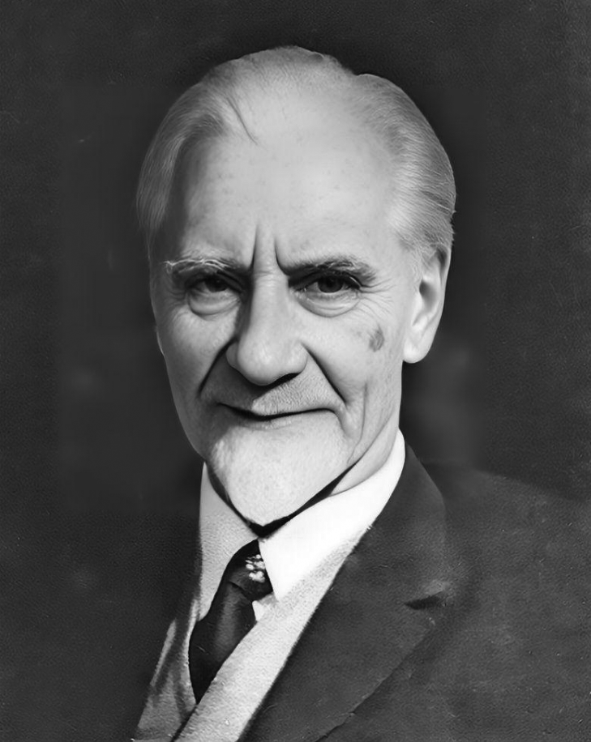Родился Кошевой Пётр Кириллович - советский военачальник, Маршал Советского Союза (1968). Кандидат в члены ЦК КПСС (1961–1971), депутат Верховного Совета СССР (1962–1970). Дважды Герой Советского Союза (1944, 1945). Участник Великой Отечественной войны, командир стрелкового корпуса. Командующий войсками Сибирского (1957–1960), Киевского (1960–1965) военных округов. Главнокомандующий Группой советских войск в Германии (1965–1969).
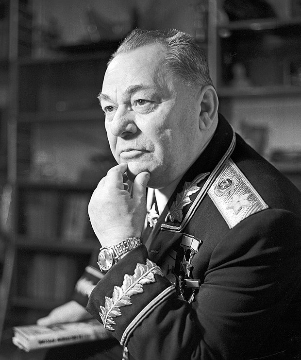Родился Воронин Григорий Иванович - российский учёный в области криогенно-вакуумной техники и кондиционирования воздуха, заслуженный деятель науки и техники РСФСР (1967), Герой Социалистического Труда (1961). Под руководством Воронина создавались системы жизнеобеспечения, терморегулирования, обеспечения газового состава, регулирования давления и водообеспечения для космических кораблей («Восток», «Восход», «Союз», «Прогресс», «Буран») и орбитальных станций («Салют», «Мир», «Алмаз»). Лауреат Ленинской премии (1966), Сталинской премии (1949, 1952). Награждён орденами Ленина (1956, 1961, 1966), Октябрьской Революции (1975), Отечественной войны 1-й степени, орденами Трудового Красного Знамени (1970, 1981).
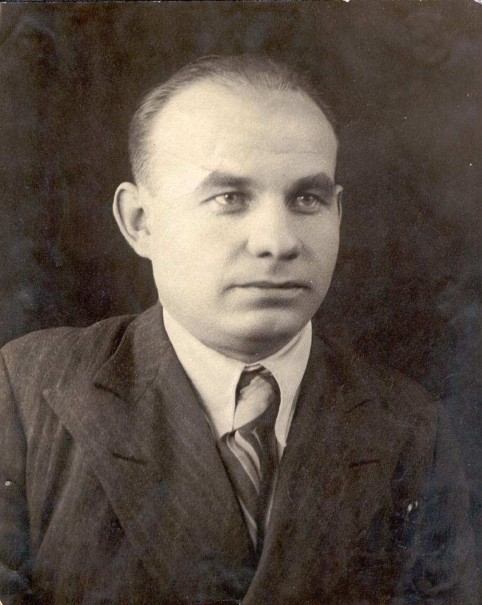Родился Козлов Алексей Михайлович — советский и российский разведчик-нелегал, Герой Российской Федерации(2000).
В конце 1970—х годов Козловым была получена оперативная информация о ядерной программе ЮАР. В июне 1980 годa в результате предательства Козлов был арестован в Йоханнесбурге. Месяц провел во внутренней тюрьме контрразведки ЮАР в Претории, подвергаясь постоянным пыткам. Затем — шесть месяцев провел в камере смертников в центральной тюрьме Претории. В 1982 году был обменен на одиннадцать человек — десять западных немцев и одного офицера армии ЮАР.
После четырех лет пребывания в Центре Козлов вновь выехал на боевую работу за границу, которая продолжалась еще десять лет. В Москву возвратился в 1997 году.
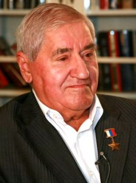«Легенды советской разведки: Алексей Козлов. В погоне за атомной бомбой». Документальный фильм